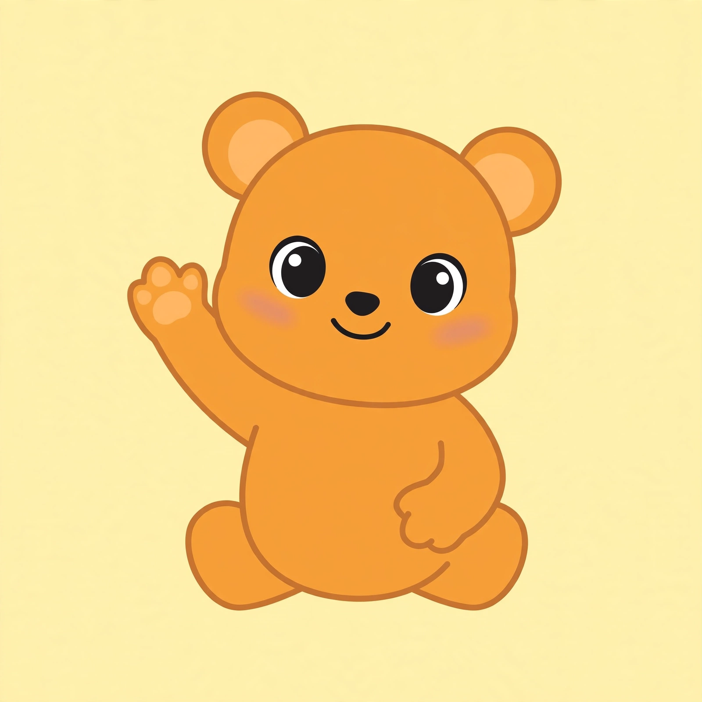

Block Pop
Sound: tap to start
🎉 Yay!
Watch together — what will the frog do?
New tower coming…
Grown-ups:
Tap a cannon together — which color will pop the most blocks?
🔊 Test sound
Sound engine:
not started
Previous game
Block Pop v2.37 • Tower
1
• No ads, no tracking — just popping.